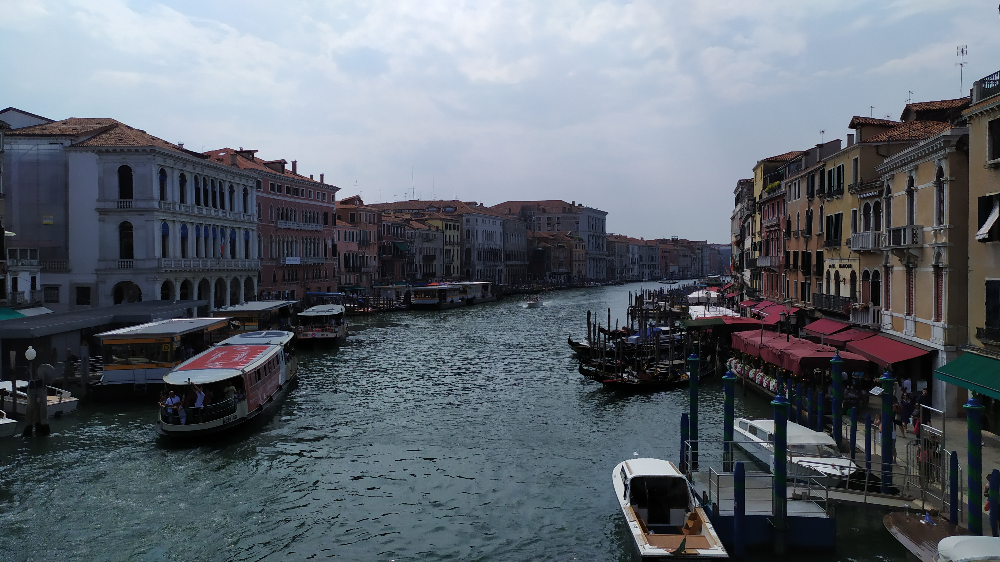

Venecia
Venecia es un lugar romántico y de
ensueño. Su centro histórico, declarado
Patrimonio de la Humanidad por la Unesco, está situado en un conjunto de islas en la laguna de Venecia, en el
norte del mar
Adriático. Su particularidad geográfica, así como su milenaria historia y su riquísimo patrimonio monumental y
artístico, han hecho de Venecia uno de los destinos turísticos más impactantes y populares del mundo. La ciudad
está construida
sobre un archipiélago de 118 pequeñas islas (si incluimos las islas de Murano, Burano y Torcello).
Gran Canal

Roma
Roma es la ciudad con la más alta concentración de bienes históricos y arquitectónicos del mundo; su centro
histórico
delimitado por el perímetro que marcan las murallas aurelianas, superposición de huellas de tres milenios, es la
máxima expresión del patrimonio histórico, artístico y cultural del mundo occidental.
Coliseo de Roma
Florencia
Florencia, la cuna del renacimiento italiano rebosa tanto arte que es difícil hacerse una idea de todo lo que
ofrece esta
preciosa ciudad de la Toscana. En el siglo XIV algunos de los genios más grandes del arte como Leonardo Da Vinci o
Miguel Ángel crearon obras maestras que maravillaron al mundo.
Ponte Vecchio
Pisa
Pisa es una ciudad de la región italiana de la Toscana, capital de la provincia homónima. Entre los monumentos
más
importantes de la ciudad figura en la célebre Piazza dei Miracoli, declarada Patrimonio de la Humanidad la
catedral,
construida en mármol entre los años 1064 y 1118, en estilo románico pisano, con su portal en bronce de Bonanno
Pisano y
el púlpito de Giovanni Pisano. Al lado de la catedral se encuentra la llamativa torre inclinada, del siglo XII,
con una
altura de 58,36 metros, que sufrió su característica inclinación inmediatamente después de iniciarse su
construcción.
Torre de Pisa
Volterra
Bolonia
San Gimignano
Florencia
Venecia
La Toscana
Pistoya

Lido de Venecia
Ponte dei Sospire